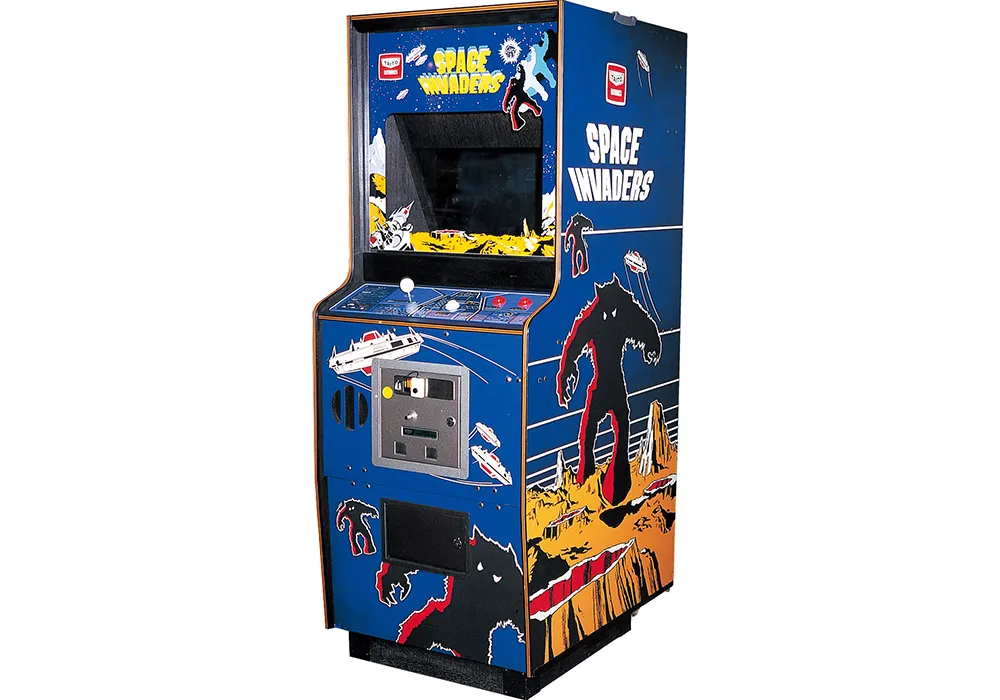
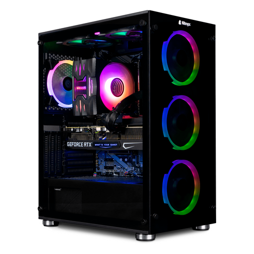

Videojuegos y su historia
Los videojuegos son juegos electrónicos visualizados en una pantalla electrónica. Su interesante historia se remonta al 1950. En esta época, unos pocos años después de la Segunda Guerra Mundial, se empezaron a crear superordenadores programables, capaces de realizar diferentes tareas que el usuario decida. No tardaron en aparecer intentos de implementar programas de caracter lúdico, como el ajedrez, hasta que esta tendencia empezó a crecer a partir de las siguientes décadas.
Los primeros videojuegos modernos aparecieron en la década de los 60, con videojuegos como Spacewar!,
hecho en 1962, o la Brown Box de Ralph Baer, hecho en 1966. Estos videojuegos primigenios tenían por
característica la complicidad de su código y la simplicidad a la hora del juego. Eran videojuegos simples
pero difíciles de programar. Esto, en las siguientes décadas, iría mejorando respecto a los prototipos de
videojuegos.
Un ejemplo sería el de
este artículo.

Tras la comercialización de Spacewar!, apareció Pong en 1972, hecho por Atari. Era un videojuego que simulaba una partida de tenis de mesa, con puntuación, sonidos, movimientos mejorados... Fue un éxito rotundo que hizo triunfar a la empresa y la afición de los jugadores por los videojuegos. Diferentes empresas empezaron a introducirse en el mercado con copias del Pong de Atari, mientras que Atari mantenía su liderazgo innovando con nuevos lanzamientos, como Space Race, Touch-Me, Quadrapong... En 1975, Atari lanzó la primera consola doméstica: Telegames Pong.

El desarrollo y la introducción de Space Invaders (un videojuego en el que tenías que ir matando marcianos con una nave espacial), en 1978, comenzó con la era dorada de los videojuegos. Esto se debe al incremento en los ingresos generados por la comercialización de los videojuegos, pasando de unos pocos millones, hasta los 5000 millones de dólares en 1982. Todo hotel, bar, restaurante, supermercado... tenían en su posesión una de estas máquinas recreativas. Las empresas más grandes del entretenimiento, como Lucasfilm, Walt Disney Pictures, 20th Century Fox o incluso McDonald's se asociaron con Atari, apostando por un mundo innovador que se superaba a sí mismo cada año.
En 1980, Nintendo se une a la era dorada con la consola Game & Watch y más tarde, en 1983, con la salida de la Nintendo Entertainment System, o NES. Esta consola supuso el fin de la crisis del videojuego de 1983, debido a la saturación del mercado de videoconsolas y videojuegos, en su mayoría de baja calidad. También afectó el creciente interés en los ordenadores personales. Gracias a Nintendo y su consola, el mercado de las videoconsolas apareció nuevamente con intenciones de mantener el puesto.

A partir de la década de los 90, tras la salida de títulos y videoconsolas de diferentes empresas, surge la guerra de las consolas. Debido a la salida de videojuegos de extrema violencia como Mortal Kombat o Street Fighter II, surgió la clasificación por edades ESRB. Sega no dejaría perder esta guerra, sacando a la venta la consola Sega Saturn en 1994. Por otro lado, Sony sacó a la venta la PlayStation, en ese mismo año. Nintendo también sacó a la venta su consola, Nintendo 64, que contaba con 64 bits. Nintendo y Sega no pudieron frenar la expansión que estaba teniendo PlayStation, haciendo que incrementase sus ventas hasta alcanzar el título de la videoconsola doméstica de mayor éxito del mundo, junto con importantes títulos como Final Fantasy VII, Rayman (1995), Wipeout, Crash Bandicoot, Resident Evil... entre otros.

En la década de los 2000 hacia delante, los videojuegos siguieron expandiéndose a un ritmo admirable, con la salida de consolas como la Xbox de Microsoft, o de títulos como Guitar Hero o Grand Theft Auto. Las consolas mejoraron sus tecnologías y potencia en bruto, mejorando cada vez más la calidad de los videojuegos. En la época de los 2010 hasta la actualidad, con la salida de las consolas de última generación, los videojuegos alcanzaron su máximo esplendor, llegando incluso a los teléfonos móviles con títulos como Candy Crush o Pokemon Go. Por otro lado, el mercado de videojuegos en ordenadores domésticos también aumentó, hasta el punto donde una mayor proporción de personas juegan en ordenadores domésticos antes que en las videoconsolas. Sea cual sea el dispositivo que utilicemos, no podemos negar que los videojuegos han tenido un pasado muy interesante e intenso, plagado de guerras por la mejoría en los productos y la satisfacción del usuario.
